التطور طويل الأمد للأنظمة الكوكبية ذات كوكب أرضي وكوكب عملاق
الملخص
ندرس التطور المداري طويل الأمد لكوكب أرضي تحت تأثير الاضطرابات الثقالية الناجمة عن كوكب عملاق. وعلى وجه الخصوص، نهتم بالحالات التي يكون فيها الكوكبان في المستوى نفسه ومتقاربين نسبيا. ونفحص التهيئتين الممكنتين: أن يكون مدار الكوكب العملاق إما خارج مدار الكوكب الأصغر أو داخله. ويُوسَّع كمون الاضطراب إلى رتب عالية، ثم يُشتق حل تحليلي لمدار الكوكب الأرضي. بعد ذلك تُقارَن التقديرات التحليلية بنتائج التكامل العددي لمعادلات الحركة الكاملة، ونجد أن الحل التحليلي يعمل على نحو معقول. ومن النتائج اللافتة أن التقديرات التحليلية الجديدة تحسن كثيرا تنبؤات المقاييس الزمنية للتطور المداري للكوكب الأرضي مقارنة بتوسع من رتبة الثماني الأقطاب. وأخيرا، نناقش بإيجاز التطبيقات المحتملة للتقديرات التحليلية في مسائل الفيزياء الفلكية.
keywords:
الميكانيكا السماوية - الكواكب والأقمار: التطور الديناميكي والاستقرار – الكواكب والأقمار: الكواكب الأرضية1 المقدمة
قبل ثلاثة عقود، كانت الكواكب الوحيدة التي نعرفها هي تلك الموجودة في نظامنا الشمسي. أما اليوم، فقد اكتُشف أكثر من 3400 كوكب في 2551 نظاما كوكبيا، مع وجود 581 من تلك الأنظمة تحتوي على كوكبين على الأقل (www.exoplanet.eu). وعلى خلاف نظامنا الشمسي، حيث تمتلك الكواكب، باستثناء عطارد، مدارات شبه دائرية ومشتركة المستوى، فإن الأنظمة الكوكبية الخارجية التي اكتُشفت حتى الآن تمتلك اختلافات مركزية كوكبية تمتد من الصفر إلى ما يقارب الواحد، كما في حالة HD20782b (O’Toole et al., 2009). وقد تكون لدى أنظمة أخرى مدارات مائلة بعضها بالنسبة إلى بعض بوصفها تهيئة ممكنة، كما يبين اكتشاف Andromedae حيث يمتلك الكوكبان العملاقان ميلا متبادلا قدره (McArthur et al., 2010). وللاطلاع على مراجعة حديثة جيدة عن بنية الأنظمة الكوكبية الخارجية، يمكن الرجوع إلى Winn & Fabrycky (2015).
عادة ما يكون تقريب الثلاثي الهرمي نهجا جيدا لنمذجة السلوك طويل الأمد لنظام ثلاثي الأجسام، إذ يمكن النظر إلى النظام على أنه ثنائيان متفاعلان؛ فالجسمان المتقاربان يشكلان الثنائي الداخلي، بينما يكون الجسم الثالث على مدار أوسع بالنسبة إلى مركز كتلة الثنائي الداخلي. في مثل هذه الحالة، يمكن التعبير عن كمون الاضطراب على هيئة متسلسلة قوى في نسبة نصفي المحورين الرئيسيين، ويمكن قطعها عند أي رتبة تُعد ضرورية للمسألة المدروسة. وفي الأنظمة النجمية أو الكواكب الموجودة في ثنائيات، من المعتاد تضمين الحدود الناشئة من الحدين و عند توسيع الهاملتوني الاضطرابي بدلالة كثيرات حدود لوجندر، وهي ما تسمى بحدي رباعي القطب وثماني القطب؛ انظر مثلا Ford et al. (2000)، Lee & Peale (2003)، Georgakarakos (2004)، Naoz et al. (2013). ويكون هذا النهج عادة كافيا عندما يوجد نجمان على الأقل في نظام الأجسام الثلاثة، أو كوكبان في مدارات عالية الميل. ويعود ذلك إلى أن الفواصل يجب أن تكون كبيرة بما يكفي ليبقى النظام مستقرا (انظر مثلا Georgakarakos, 2013). غير أنه في نظام شبه مشترك المستوى يحوي نجما واحدا فقط، يمكن للكواكب أن تكون أكثر تقاربا بكثير وأن تبقى مع ذلك مستقرة.
في سلسلة من الأوراق (Georgakarakos, 2002, 2003, 2009) حصلنا على تعبيرات تحليلية للاختلاف المركزي وخط طول الحضيض في الأنظمة الثلاثية الهرمية غير الرنينية والمشتركة المستوى. وقد أُجريت تلك الحسابات على مقاييس زمنية قصيرة (من رتبة الفترات المدارية) وعلى مقاييس زمنية دهرية. وعلى الرغم من عدم وجود أي قيد صريح على نسب الكتل في الأنظمة، كان ذلك العمل موجها إلى التركيز على الأنظمة النجمية. وفي Georgakarakos (2006) اختبرنا صلاحية نتائج Georgakarakos (2002, 2003) للأنظمة الكوكبية، ولكن من حيث نسب الكتل فقط، وصولا إلى أجسام بحجم المشتري فحسب. في هذا العمل نحاول توسيع عملنا السابق باشتقاق تعبيرات تحليلية لحركة نظام مؤلف من كوكبين تقع جميع أجسامه في المستوى نفسه. ونولي اهتماما خاصا للحالة التي يكون فيها أحد الكوكبين أصغر كثيرا من الآخر، لأن هذه التهيئة يمكن أن تكون لها تطبيقات كثيرة في دراسات قابلية السكن. ومن ثم فإن اهتمامنا الأساسي في العمل الحالي ينصب على أنظمة تحوي كوكبا شبيها بالأرض أو أرضا فائقة وكوكبا عملاقا. وقد تكون النتائج قابلة للتطبيق أيضا على حركة أنظمة أخرى، مثل نظام يضم نجما وكوكبا عملاقا وقمره الخارجي. وأخيرا، نود الإشارة إلى أننا في العمل الحالي سنركز فقط على الحركة طويلة الأمد للنظام.
تأتي بنية الورقة على النحو الآتي: في القسم 2، نعرض صياغة المسألة والحل التحليلي لها. وفي القسم 3، نختبر النتائج الجديدة باستخدام تكاملات عددية لمعادلات الحركة الكاملة، وفي القسم 4 نلخص نتائجنا ونناقش الآفاق المستقبلية.
2 النظرية
كما ذكرنا بإيجاز في المقدمة، يهدف هذا البحث إلى اشتقاق تقديرات تحليلية لحركة كوكب بكتلة الأرض أو الأرض الفائقة تحت التأثير الثقالي لكوكب عملاق، مع وقوع جميع الأجسام في المستوى نفسه. وسنركز على التطور المداري طويل الأمد، لأن مساهمة الحدود قصيرة الفترة في التطور المداري لنوع الأنظمة التي ندرسها صغيرة جدا (باستثناء مدارات الكوكب العملاق شبه الدائرية). وبما أن أنصاف المحاور الرئيسية في المسألة الدهرية لا تتغير (انظر مثلا Harrington, 1968)، فإننا لا نحتاج إلا إلى تحديد الاختلافات المركزية وخطوط طول الحضيض لكواكبنا كي نحصل على وصف ديناميكي كامل لنظامنا. وبافتراض أن مدار الكوكب الأكبر لا يتأثر بوجود الكوكب الأصغر، يكفي أن نعالج التطور المداري للأخير.
نبحث إعدادين مختلفين. في الأول، يتكون الثنائي الداخلي في ثلاثينا الهرمي من النجم والكوكب الأصغر، بينما يكون الجسم الأكبر في مدار خارجي بالنسبة إلى ذلك. وسنسمّي تلك الحالة فيما يأتي الحالة الداخلية. وفي الثانية المسماة الحالة الخارجية، ندرس الوضع الذي يكون فيه مدار الكوكب العملاق داخل مدار الكوكب الأصغر. وهذه أيضا تهيئة ممكنة كما تبينها دراسات حديثة (Raymond et al., 2006; Ogihara et al., 2014) واكتشاف أنظمة مثل Kepler-87 (e.g. see Ofir et al., 2014).
فيما يلي، سنستخدم الصياغة الهاملتونية لدراسة الحركة الدهرية للأنظمة قيد البحث. أولا، سنشتق الهاملتوني الدهري ثم معادلات الحركة التي تُحل بعد ذلك تحليليا، مانحة إيانا حلا لمسألتنا. ويُفترض أن مدار الكوكب الأصغر دائري في البداية وأن اختلافه المركزي الأعظمي سيبقى منخفضا إلى حد ما. إضافة إلى ذلك، في الحل المداري للحالة الخارجية، نحتفظ بحدود من الرتبة الثامنة في اختلاف مركزية الكوكب العملاق، لأن معظم المشتريات الحارة أو الدافئة لها اختلافات مركزية صغيرة إلى متوسطة. وتُعامل جميع الأجسام ككتل نقطية، وفي هذه المرحلة لا ننظر إلا في التفاعلات الثقالية على المستوى النيوتني. وبالنسبة إلى جميع العناصر المدارية، يشير الدليلان 1 و2 إلى الكوكب الداخلي والخارجي على الترتيب.
2.1 توسيط الهاملتوني
في عملنا السابق (Georgakarakos, 2002, 2003)، أُنجز اشتقاق الهاملتوني الدهري بطريقة فون زيبل، التي تستخدم تحويلات قانونية لإزالة المتغيرات السريعة. وإلى جانب إعطاء هاملتوني كامل من حيث الاختلافات المركزية، تنتج طريقة فون زيبل أيضا حدودا من الرتبة الثانية في الكتل، وهو أمر لا يمكن بلوغه بطرائق أخرى كثيرة (مثل طريقة «المقصات»). غير أن هذه السمة الأخيرة لطريقة فون زيبل مهمة في الأنظمة ذات الكتلة الخارجية الكبيرة، وهو ليس الحال هنا. ومن ثم، ولغرض هذه الورقة، نعتمد طريقة مختلفة للحصول على الهاملتوني الدهري.
اتباعا لـ Lee & Peale (2003)، نستخدم المتغيرات الآتية، وهي مجموعة من المتغيرات القانونية (Brouwer & Clemence, 1961; Murray & Dermott, 1999)، وتُعرّف لنظام ثلاثي الأجسام مشترك المستوى كما يأتي:
| (1) |
حيث إن و و و هي أنصاف المحاور الرئيسية، والاختلافات المركزية، وخطوط طول الحضيض، والشذوذات المتوسطة للمدار الداخلي () والمدار الخارجي () على الترتيب. علاوة على ذلك،
هي ما يسمى بالكتل المختزلة، حيث إن و هما كتلتا النجم والكوكبين على الترتيب. والكتلة الكلية للنظام هي . وباستخدام هذه المتغيرات، يُكتب الهاملتوني لنظام ثلاثي هرمي على الصورة
| (2) |
حيث
| (3) |
هي الطاقة الكبلرية للمدار الداخلي،
| (4) |
هي الطاقة الكبلرية للمدار الخارجي، و
| (5) |
هو الهاملتوني الاضطرابي، حيث إن و هما المسافتان بين و وبين و على الترتيب. و هو ثابت الجاذبية، وR هو المتجه الذي يصل مركز كتلة الثنائي الداخلي بالجسم الثالث، بينما سيشير r إلى متجه الموضع النسبي للمدار الداخلي (انظر الشكل 1).
يمكن كتابة المعادلة (5) على الصورة
| (6) |
مع
وبما أننا نتعامل مع نظام هرمي و، يمكن تمثيل مقلوبات المسافات بدلالة كثيرات حدود لوجندر كما يأتي (انظر مثلا Murray & Dermott, 1999):
| (7) |
و
| (8) |
حيث إن هي الزاوية بين المتجهين r وR. بعد ذلك، وبعد بعض المعالجات الجبرية الأساسية، تصبح المعادلة (6):
| (9) |
حيث
لوصف الحركة طويلة الأمد للنظام، يجب توسيط الهاملتوني أعلاه على الزوايا السريعة، بعد إدراج التعبيرات المناسبة لمتجهي الموضع النسبيين والزاوية . وتُعطى كثيرات حدود لوجندر بـ
| (10) |
أما بقية الكميات فنستخدم لها التعبيرات الآتية:
| (11) | |||||
| (12) | |||||
| (13) | |||||
| (14) |
حيث إن هو الشذوذ اللامركزي للمدار الداخلي، و يدل على الشذوذ الحقيقي (). ومن أجل إيجاد الهاملتوني الدهري، نحتاج إلى ترشيح التأثيرات ذات المقاييس الزمنية من رتبة الفترتين الكوكبيتين. وتمثل هذه التأثيرات في هاملتونيّنا بالشذوذ اللامركزي الداخلي والشذوذ الحقيقي الخارجي ؛ ومن ثم يمكن الحصول على الهاملتوني الدهري بحساب التكامل المزدوج الآتي:
| (15) |
حيث يدل الدليل l على التطور طويل الأمد. وعلى الرغم من أننا، لأسباب تتعلق بالتبسيط، لن نستخدم الدليل l فيما يأتي، فإن الهاملتوني والعناصر المدارية سيشيران إلى الكميات طويلة الأمد.
ضمن هذا الإطار، يمكن اشتقاق الهاملتوني المتوسط حتى أي رتبة نختارها. وقد اخترنا في هذا العمل حساب الهاملتوني حتى الرتبة الحادية عشرة. هدفنا الرئيس هو وصف حركة كوكب أرضي تحت التأثير الثقالي لكوكب عملاق عندما تكون نسبة نصفي المحورين الرئيسيين صغيرة نسبيا ( قد تبلغ نحو 1.6، 1.7). وقد أظهرت الاختبارات العددية، حتى الرتبة الخامسة عشرة، فروقا مهملة مقارنة بتوسع الرتبة الحادية عشرة لهذا النوع من نسب أنصاف المحاور الرئيسية، مما يشير إلى أن الأخير يقدم تقديرا تحليليا جيدا بما يكفي لنسب أنصاف المحاور الرئيسية والكتل المدروسة في هذا العمل. ومع ذلك، تُعرض التقديرات التحليلية بطريقة تتيح قطعها عند أي رتبة دون الحادية عشرة. ويُعطى مزيد من التبرير لهذا الاختيار في القسم 3.
بما أن مدار الكوكب الأصغر دائري في البداية ويُفترض أنه لن يصبح عظيم الاختلاف المركزي، فإننا، بدلا من اشتقاق الهاملتوني الكامل ثم إهمال حدود في معادلات الحركة الدهرية كما فُعل في Georgakarakos (2003)، نختار إجراء تقريب مكافئ باشتقاق هاملتوني دهري تقريبي تُهمل فيه الحدود من الرتبة وما فوقها. وستقود معادلات الحركة المبنية على الهاملتوني التقريبي في النهاية إلى الحل نفسه الذي نحصل عليه لو أزلنا حدود الرتبة الثانية من معادلات الحركة. غير أننا بهذه الطريقة نتجنب التعبيرات المطولة للهاملتوني ومعادلات الحركة اللاحقة، مع الحفاظ على دقة تقديراتنا التحليلية. ويمكن العثور على الهاملتوني الدهري الاضطرابي الكامل (في الاختلافات المركزية) من الرتبة الحادية عشرة، الذي سيُستخدم لأغراض الاختبار في القسم 3، في الملحق B، وهو متوافق جيدا مع النتائج التي حصل عليها مؤلفون آخرون (مثلا Migaszewski & Goździewski, 2008; Laskar & Boué, 2010).
2.2 الحالة الداخلية
نبدأ باشتقاق الحل التحليلي للحالة الداخلية، حيث يكون مدار الكوكب الأصغر داخل مدار الجسم الكوكبي الأكبر. ومن المعادلة (15)، ومع التعبير بالعناصر المدارية حتى الرتبة الحادية عشرة، يصبح الهاملتوني الاضطرابي طويل الأمد التقريبي:
| (16) |
مع
| (17) | |||||
| (18) | |||||
| (19) | |||||
| (20) | |||||
| (21) | |||||
| (22) | |||||
| (23) | |||||
| (24) | |||||
| (25) | |||||
| (26) | |||||
بعد إيجاد الهاملتوني، نستطيع الآن اشتقاق معادلات الحركة لنظامنا الثلاثي الأجسام. وباستخدام مجموعتنا من المتغيرات القانونية، تأخذ معادلات هاملتون الشكل الآتي لنظام مشترك المستوى:
| (27) |
وبما أن العناصر المدارية المعتادة ليست مجموعة من المتغيرات القانونية، يمكننا استخدام العلاقات أعلاه للحصول على معادلات الحركة بدلالة العناصر المدارية (تفاصيل أكثر في الملحق A). ومع تذكر أننا افترضنا أن مدار الكوكب الأكبر لا يتأثر بوجود الكوكب الأصغر، وأنه لا يوجد تغير دهري في أنصاف المحاور الرئيسية (لأن الهاملتوني مستقل عن )، فلن نحتاج إلا إلى تعبيرات للاختلاف المركزي وخط طول الحضيض لمدار الكوكب الأصغر. وهذه هي:
| (28) | |||||
| (29) |
غير أنه، بدلا من استخدام و، من الأفضل استخدام المتغيرين و، أي مركبتي متجه الاختلاف المركزي الداخلي طويل الأمد. وبهذه الطريقة يمكننا تجنب التفردات في معادلات الحركة عندما يكون الاختلاف المركزي للجسم الأصغر صفرا في البداية. وباستخدام تعبيرات الهاملتوني طويل الأمد التي اشتققناها سابقا، نحصل على نظام المعادلات التفاضلية الآتي:
| (30) | |||||
| (31) |
حيث إن و ثوابت وتُعطيان كما يأتي:
| (32) |
| (33) | |||||
| (34) | |||||
| (35) | |||||
| (36) |
| (37) |
| (38) | |||||
| (39) | |||||
| (40) | |||||
| (41) | |||||
| (42) |
| (44) |
| (45) | |||||
| (46) | |||||
| (47) | |||||
| (48) | |||||
| (49) |
2.3 الحالة الخارجية
على غرار الحالة الداخلية، يمكننا اشتقاق الهاملتوني طويل الأمد للحالة التي يكون فيها الكوكب العملاق داخل مدار الكوكب الأصغر. ويُحصل على الهاملتوني في هذه الحالة بطريقة مشابهة للحالة الداخلية؛ والفرق الوحيد هو أننا نهمل الآن حدود وما فوقها بدلا من حدود لا تقل رتبتها عن . ونتيجة لذلك، يكون الهاملتوني الاضطرابي طويل الأمد:
| (58) | |||||
| (59) | |||||
| (60) | |||||
| (61) | |||||
| (62) | |||||
| (63) | |||||
| (64) | |||||
| (65) | |||||
| (66) | |||||
| (67) |
لاحظ أن هو نفسه كما في الحالة الداخلية.
باتباع الإجراء نفسه كما سبق، ننتهي مرة أخرى إلى نظام من معادلتين تفاضليتين خطيتين غير متجانستين، لهما الشكل نفسه كما في الحالة الداخلية:
| (68) | |||||
| (69) |
مع
| (70) |
| (71) | |||||
| (72) | |||||
| (73) | |||||
| (74) |
| (75) |
| (76) | |||||
| (77) | |||||
| (78) | |||||
| (79) | |||||
| (80) |
| (81) |
| (82) | |||||
| (83) | |||||
| (84) | |||||
| (85) | |||||
| (86) |
| (87) | |||||
| (88) |
و
| (89) | |||||
| (90) |
وفي كلتا الحالتين الداخلية والخارجية، تكون فترة التذبذب
| (91) |
2.4 الاختلاف المركزي الأعظمي والمتوسط
استنادا إلى النتائج التحليلية في الأقسام السابقة، يمكننا إيجاد تعبيرات للاختلاف المركزي الأعظمي ومتوسط مربع الاختلاف المركزي. وباستخدام المعادلات (54)، و(55)، و(87)، و(88) نحصل على:
| (92) |
كما يمكن ملاحظة ذلك، فإن النتيجة أعلاه مستقلة عن خط طول حضيض الكوكب الأكبر. لذلك، وبأخذ متوسط المعادلة أعلاه زمنيا، نحصل على:
| (93) |
إضافة إلى ذلك، يمكن أن يبيَّن بسهولة من المعادلة (92) أن القيمة العظمى للاختلاف المركزي هي
| (94) |
3 النتائج العددية
لاختبار صلاحية تقديراتنا التحليلية، أجرينا سلسلة من التجارب العددية تضمنت تكامل معادلات الحركة الكاملة ومعادلات الحركة الدهرية للهاملتوني الكامل حتى الرتبة الحادية عشرة. وبالنسبة إلى الأولى، استخدمنا المكامل السيمبلكتيكي ذي تحويل الزمن الذي طوّره Seppo Mikkola (Mikkola, 1997)، وهو مصمم خصيصا لتكامل الأنظمة الثلاثية الهرمية. ويستخدم الرمز إحداثيات جاكوبي القياسية، أي إنه يحسب متجهي الموضع والسرعة النسبيين للمدارين الداخلي والخارجي في كل خطوة زمنية. أما في التكامل العددي للمعادلات الدهرية، فقد استخدمنا مكامل Bulirsch-Stoer المعطى في Press et al. (1992).
في جميع المحاكاة كانت كتلة النجم مساوية لكتلة شمسية واحدة، بينما ضُبطت كتلة الكوكب الأصغر على كتلة أرضية واحدة. وبالنسبة إلى الكوكب الأكبر استخدمنا أربع كتل مختلفة: (وهو يقارب ). وفي الحالة الداخلية ثُبت نصف المحور الرئيسي للكوكب الصغير عند 1 au، بينما تراوح نصف المحور الرئيسي للكوكب الأكبر بين 1.1 au و7 au، وأُعطي اختلافه المركزي قيما في المجال [0.05،0.4] بخطوة مقدارها 0.05. إن اختيار قيم أعلى لاختلاف مركزية الجسم المضطرب (>0.4) لن يكون ذا معنى في حالتنا، لأن التقديرات التحليلية الجديدة مهمة لنسب أصغر من أنصاف المحاور الرئيسية؛ فالنظام ذو اختلاف مركزية أعلى للكوكب العملاق سيتطلب نسبة أكبر لنصفي المحورين الرئيسيين كي يكون مستقرا. وفي هذه الحالة، يكون الحل القديم لـ Georgakarakos (2003) مع توسع كثيرات حدود لوجندر حتى كافيا. وفي الدراسة الحالية، لكل زوج من ، أُعطيا خط طول الحضيض الابتدائي والشذوذ الحقيقي للكوكب الأكبر القيم ، أي إننا حاكينا ستة عشر مدارا مختلفا. وأخيرا، كان الكوكب الأصغر يبدأ دائما على طول الاتجاه الموجب لمحور x. وبالمثل، في الحالة الخارجية، ثبّتنا نصف المحور الرئيسي للكوكب العملاق عند 0.5 au، بينما غُيّر نصف المحور الرئيسي للكوكب الأصغر من 0.7 au إلى 3 au. وضُبطت قيم اختلاف المركزية وخط طول الحضيض والشذوذ الحقيقي للكوكب العملاق والموضع الابتدائي للكوكب الأصغر بالطريقة نفسها كما في الحالة الداخلية. وفي جميع المحاكاة كان زمن التكامل مساويا لفترة دهرية تحليلية واحدة كما تُعطى في المعادلة (91).
كما ذكرنا في المقدمة، يهدف هذا العمل أساسا إلى أنظمة يكون فيها الكوكبان متقاربين نسبيا لكنهما لا يزالان في مدارات مستقرة (يمكن أخذ فكرة عن حد الاستقرار للأنظمة التي نبحثها من Georgakarakos, 2013; Petrovich, 2015)، لأن نماذجنا المطورة سابقا غير كافية لمثل هذه الأنظمة. وكانت الكميات التي اختبرناها هي متوسط مربع الاختلاف المركزي والاختلاف المركزي الأعظمي. ولكل من الحالتين الداخلية والخارجية وجدنا الخطأ النسبي بين المعادلة (93) ومتوسط مربع الاختلاف المركزي الناتج من التكامل العددي لمعادلات الحركة الكاملة. وفي الوقت نفسه، قسنا الكمية نفسها ولكن هذه المرة باستخدام معادلات الحركة الدهرية المشتقة من الهاملتوني الكامل (في الاختلافات المركزية) من الرتبة الحادية عشرة. وهذا يضمن أن الخطأ الصغير بين التقديرات التحليلية والحل العددي للمسألة الكاملة ليس نوعا من الأثر المصطنع. ولا يدل على أن التقديرات التحليلية تقريب جيد للمسألة الكاملة إلا خطأ صغير في الأولى مصحوب بخطأ صغير في الثانية. وطبقنا الإجراء نفسه على الاختلاف المركزي الأعظمي المحصل لزوج معين من ، ( للحالتين الداخلية والخارجية على الترتيب). وأخيرا، لكل زوج ، سجلنا الاختلاف المركزي الأعظمي الذي بلغه الكوكب الأصغر أثناء التكامل العددي.
كانت التقديرات التحليلية عموما في توافق جيد مع نتائج المحاكاة العددية. وكما هو متوقع، تفشل التقديرات التحليلية عندما تصبح الاضطرابات قوية ويبلغ الاختلاف المركزي المتولد للكوكب الأصغر قيما متوسطة إلى عالية، أو عندما يقترب النظام من حد الاستقرار. ويحدث ذلك عادة عند قيم أعلى لاختلاف مركزية الكوكب العملاق ونسب أصغر لنصفي المحورين الرئيسيين. أما لبقية القيم في فضاء نصف المحور الرئيسي - الاختلاف المركزي، فقد تبين أن التقديرات التحليلية تقريب جيد للمسألة الكاملة. وكانت الأنظمة القريبة من رنينات الحركة المتوسطة استثناء من هذه القاعدة. ففي مثل هذه الحالة تفشل النظرية الدهرية، ولا يعمل النموذج النظري المطور هنا على نحو جيد. وتفشل الطريقة تماما قرب الموقع الدقيق لرنين الحركة المتوسطة، لكنها تتحسن تدريجيا كلما ابتعدنا عنه. وبطبيعة الحال، يعتمد مدى التأثير على كتلة الجسم المضطرب واختلاف مركزيته، إذ يعتمد عرض الرنين على هاتين المعلمتين (انظر مثلا Murray & Dermott, 1999).
تعرض الأشكال 2 و3 و4 بعض نتائجنا للحالتين الداخلية والخارجية لجسم مضطرب كتلته كتلة مشتري واحدة. ويبين الشكل 2 الأخطاء النسبية اللوغاريتمية في متوسط مربع الاختلاف المركزي والاختلاف المركزي الأعظمي، مصحوبة برسم يبين الاختلاف المركزي الأعظمي المتحقق. ويشير العمود الأيسر إلى الحالة الداخلية، بينما يشير العمود الأيمن إلى الحالة الخارجية. ويعرض الصف الأول الخطأ النسبي بين التقدير التحليلي ومتوسط مربع الاختلاف المركزي المستحصل من التكامل العددي لمعادلات الحركة الكاملة. وينبغي أن يؤخذ في الحسبان أن الخطأ النسبي في قد يكون أكبر بعامل مقداره اثنان مقارنة بخطأ في متوسط الاختلاف المركزي. وفي الجانب الأيسر من الرسوم توجد مدارات غير مستقرة (هروب أو قذف الكوكب الأرضي) يُشار إليها بعدم وجود رمز، أو مدارات يكتسب فيها الاختلاف المركزي المضطرب الأعظمي قيما عالية. غير أننا كلما انتقلنا إلى يمين الرسوم أصبحت نسبة نصفي المحورين الرئيسيين أصغر وتحسنت نتائجنا التحليلية تحسنا ملحوظا.
عندما يصبح الاختلاف المركزي المضطرب الأعظمي أكبر من 0.2-0.25، تبدأ فرضية بقاء اختلاف مركزية الكوكب الأرضي صغيرا بالفشل، لأن حدود اختلاف مركزية الكوكب الأرضي من الرتبة الثالثة، المهملة في الهاملتوني الدهري، تصبح مهمة للتطور الديناميكي للنظام. لذلك يُتوقع أن تبدأ النظرية التحليلية بالفشل في مثل هذه الحالات. ومع ذلك، قد تُظهر النتائج التحليلية أحيانا توافقا جيدا مع النموذج الكامل لأنظمة يصبح فيها الاختلاف المركزي الأرضي أكبر من 0.25. ولسوء الحظ، قد يكون ذلك التوافق الجيد مصادفة، إذ إن إغفال حدود الرتبة الثالثة في الهاملتوني عُوّض بأثر آخر ما (مثل القرب من رنين حركة متوسطة). ولتجنب استخلاص نتيجة خاطئة بشأن دقة التقديرات التحليلية، أنشأنا رسوم الصف الثاني، التي تعرض الخطأ النسبي اللوغاريتمي في متوسط مربع الاختلاف المركزي بين التقديرات التحليلية ونتائج التكامل العددي لمعادلات الحركة الدهرية الكاملة من الرتبة الحادية عشرة. وعادة، عندما يصبح الاختلاف المركزي أكبر من 0.25، تؤدي حدود الاختلاف المركزي الأعلى رتبة، المحذوفة من الهاملتوني التقريبي، إلى حل تحليلي يبالغ في تقدير فترة العناصر المدارية الدهرية وسعتها. ولذلك لا يمكن قبول أن التقديرات النظرية تعمل جيدا إلا عندما يكون كل من الخطأ بين التقديرات التحليلية ونتائج المعادلات الكاملة، والخطأ بين التقديرات التحليلية ونتائج المعادلات الدهرية الكاملة، صغيرا. والفجوة في الزاوية العلوية اليسرى من تلك الرسوم سببها أن الاختلاف المركزي المضطرب نما إلى أكبر من واحد، فلم يعد بالإمكان تعريف الكمية ، التي تظهر في بعض مقامات معادلات الحركة الدهرية، ضمن مجموعة الأعداد الحقيقية، ومن ثم توقفت المحاكاة.
يقارن الصف الثالث من الرسوم التقدير التحليلي للاختلاف المركزي الأعظمي بالاختلاف المركزي الأعظمي الذي تحقق أثناء التكامل العددي لمعادلات الحركة الكاملة. ومرة أخرى، يكون الخطأ كبيرا للأنظمة في المنطقة العلوية اليسرى من الرسوم، ثم يصغر تدريجيا كلما انتقلنا إلى اليمين. ويعرض الصف الرابع من الرسوم الخطأ اللوغاريتمي النسبي بين التقدير التحليلي للاختلاف المركزي الأعظمي والاختلاف المركزي الأعظمي الناتج أثناء التكامل العددي لمعادلات الحركة الدهرية الكاملة من الرتبة الحادية عشرة. وكانت أسباب إدراج هذا الصف هي نفسها كما في حالة متوسط مربع الاختلاف المركزي. ويعرض الصف الأخير الاختلاف المركزي العددي الأعظمي الذي حصلنا عليه عند تكامل معادلات الحركة الكاملة. كما أن استخدام هذه الرسوم لتحديد مناطق الاختلاف المركزي العالي مؤشر مفيد على المواضع التي قد تواجه فيها تقديراتنا التحليلية مشكلات.
كما ذكرنا سابقا، عندما تكون الشروط الابتدائية لنظام ما في جوار رنين حركة متوسطة، تفشل نظريتنا. وكلما ابتعدنا عن تلك المنطقة تتحسن النتائج من جديد. وفي رسوم الصف الأول في الشكل 2، أشرنا إلى بضعة مواقع لرنين الحركة المتوسطة تتطابق مع أخذ عينات نصف المحور الرئيسي الابتدائي. ويتجلى الأثر الرنيني بخط عمودي أكثر حمرة (دلالة على تغير مفاجئ في الخطأ) مقارنة بالمنطقة المجاورة. وكلما انتقلنا إلى نسب أصغر لنصفي المحورين الرئيسيين، أصبح تجنب الرنينات أكثر صعوبة لأنها تصبح أقوى وتغطي مساحات أكبر من فضاء المعلمات. وهذا، إلى جانب حقيقة أن تقارب توسع متسلسلة كثيرات حدود لوجندر يصبح أبطأ كثيرا عند نسب أصغر لنصفي المحورين الرئيسيين، يجعل الأمور عسيرة إلى حد ما على تقديراتنا عندما .
يبين الشكلان 3 و4 تحسن التقديرات التحليلية للحالتين الداخلية والخارجية كلما أضفنا حدودا أكثر إلى التوسع. وهما يعرضان الخطأ النسبي المئوي في الفترة وفي الاختلاف المركزي الأعظمي بين حلول تحليلية مقدرة عند رتب مختلفة من نسبة نصفي المحورين الرئيسيين. وبصورة أدق، حسبنا الكمية مع ، حيث إن K إما فترة تطور الاختلاف المركزي/خط طول الحضيض، المعطاة بالمعادلة (91)، أو الاختلاف المركزي الأعظمي، وتشير الأدلة إلى رتبة التوسع التي استخدمناها. وتكون الزيادة في رتبة التوسع بين حل تحليلي وتحسينه الأول دائما مقدارها اثنان، لأن حدي A وB في الحل التحليلي يأتيان من كثيرات حدود لوجندر ذات أدلة زوجية، بينما يحتوي الحد C فقط على كثيرات حدود لوجندر ذات رتب فردية. وينبغي للقارئ أن يضع في اعتباره أن التغيرات في الحد A تؤثر في الفترة فقط، وأن التغيرات في الحد B تؤثر في كل من الفترة والقيمة العظمى للاختلاف المركزي، وأن التغيرات في الحد C تؤثر في الاختلاف المركزي الأعظمي فقط. لذلك فمن الضروري أن نرتقي في التوسع برتبتين في كل مرة للحصول على الصورة الصحيحة.
ما نجده من فحص الشكلين 3 و4 هو أن التوسع عالي الرتبة مهم للحصول على صورة أدق لتطور النظام مع تناقص نسبة نصفي المحورين الرئيسيين . ويكون أثر تضمين الحدود الأعلى رتبة في الحل التحليلي أوضح بكثير في الفترة منه في القيمة العظمى للاختلاف المركزي. إضافة إلى ذلك، يزداد أثر تضمين الحدود الأعلى رتبة مع زيادة اختلاف مركزية الجسم المضطرب. وفي جميع الحالات، يكون التوسع حتى الرتبة الثالثة غير كاف للوصف الديناميكي للنظام، ويكون استخدام توسع لا يقل عن الرتبة الخامسة ضروريا، حتى في الأنظمة ذات نسب أنصاف محاور رئيسية أكبر. وأخيرا، نود الإشارة إلى أن الرسوم في الشكلين 3 و4 لا تتأثر بتغير كتلة الجسم المضطرب. وهذا متوقع كما توحي المعادلات المشتقة في الأقسام السابقة.
يمكن العثور على مزيد من نتائج محاكاتنا في الملحق C، حيث يمكن للقارئ أن يجد رسوما مشابهة لما في الشكل 2، ولكن لجسم مضطرب كتلته 10 و0.1 و0.03 من كتل المشتري. وتظهر النتائج الخاصة بتلك الكتل الأخرى سلوكا مماثلا لنتائج نظام كان فيه للجسم المضطرب كتلة مقدارها . والفرق الرئيس هو أنه كلما صغرت (كبرت) كتلة الجسم المضطرب، ومن ثم ضعفت (قويت) الاضطرابات، أصبحت تقديراتنا التحليلية تقريبا جيدا للمسألة الكاملة على مساحة أكبر (أصغر) من فضاء معلماتنا.
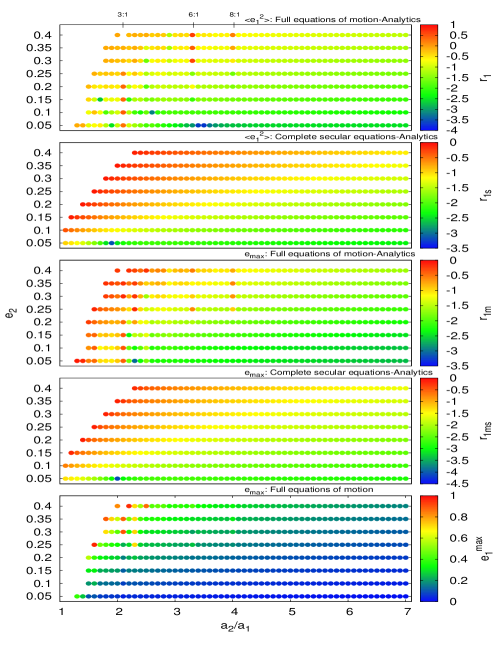
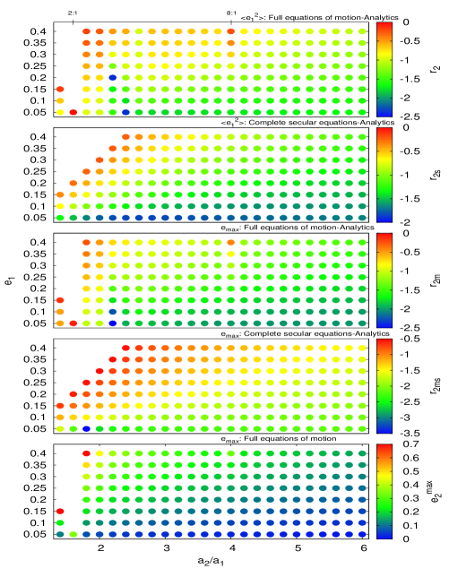
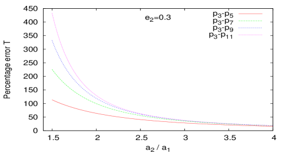
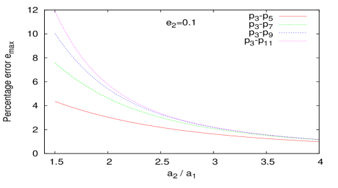
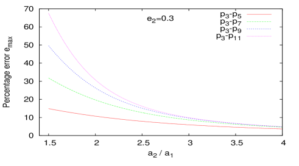
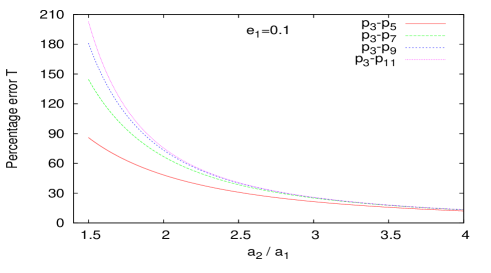
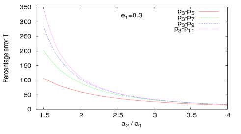
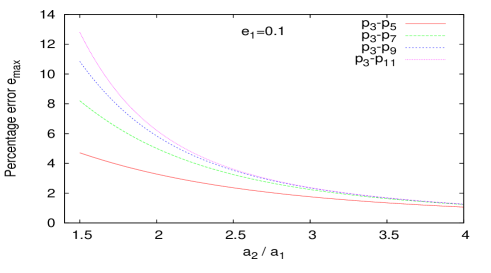
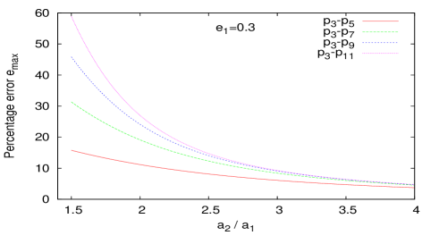
4 الخلاصة والمناقشة
حصلنا في هذا العمل على حل تحليلي للحركة طويلة الأمد لكوكب أصغر تحت تأثير الاضطرابات الثقالية لكوكب أكبر، مع وقوع جميع الأجسام في المستوى نفسه. وكان الكوكب الأصغر في البداية على مدار دائري. غير أن النظرية المطورة في هذه الورقة يمكن أن تنطبق على أي نظام يكون للكوكب الأرضي فيه اختلاف مركزي ابتدائي صغير غير صفري. وتُدخل الشروط الابتدائية المختلفة في معادلاتنا عبر الثابتين و.
أجرينا توسعا عالي الرتبة للهاملتوني الاضطرابي بدلالة نسبة نصفي المحورين الرئيسيين للكوكبين، وحللنا معادلات الحركة المشتقة تحليليا. وقد قُدم التوسع والحل التحليلي لمعادلات الحركة بطريقة تتيح، تبعا للتطبيق والدقة المطلوبة، الاحتفاظ بالرتبة المرغوبة في نسبة نصفي المحورين الرئيسيين واختلاف مركزية الجسم المضطرب. علاوة على ذلك، يمكن دمج الحل الدهري الجديد بسهولة، عند الحاجة، مع الحدود قصيرة الفترة (كما في المثال Georgakarakos, 2003). وتصبح مثل هذه الحدود ضرورية في أنواع الأنظمة التي نبحثها عندما يكون اختلاف مركزية الجسم المضطرب منخفضا (). ثم قورن الحل التحليلي بنتائج مستحصلة من محاكاة عددية، وكان الاتفاق بين النتائج التحليلية والعددية جيدا عموما.
وكما هو متوقع، لا تعمل النتائج التحليلية الجديدة جيدا قرب رنينات الحركة المتوسطة، وعندما تكون كتلتَا الجسمين الكوكبيين متقاربتين، ومن ثم لا يمكن افتراض ثبات اختلاف مركزية الجسم المضطرب وحضيضه بعد ذلك، وفي الحالات التي يتغير فيها حضيض الجسم الأكبر مع الزمن بسبب النسبية العامة. وينبغي معالجة مثل هذه الحالات بطريقة مختلفة. فعلى سبيل المثال، في الحالة التي يكون فيها مدار الكوكب العملاق داخل مدار الكوكب الأصغر، قد يلزم تضمين تصحيح ما بعد نيوتني لحركة حضيض الكوكب العملاق من أجل نمذجة النظام بدقة أكبر. وفي مثل هذا السيناريو، لن تعود للمعادلتين (68) و(69) معاملات ثابتة، وينبغي البحث عن نوع مختلف من الحلول. ومن ناحية أخرى، على الرغم من أن الكواكب القريبة من رنين حركة متوسطة يمكن أن تفسد حلنا تماما، فإننا كلما ابتعدنا عن موقع رنين الحركة المتوسطة، قد يوفر الحل الدهري تقريبا معقولا لحركة النظام، لكنه قد يحتاج إلى الاقتران بنمذجة ما لرنين الحركة المتوسطة لتحسين دقته. وأخيرا، ستزداد المسألة تعقيدا إذا افترضنا أن خط طول حضيض الجسم المضطرب يتأثر بالجسم المضطَرَب. وهذا افتراض ضروري إلى حد ما عند التعامل مع كوكبين متقاربين في الحجم، وقد أكدت ذلك بعض محاكاة الاختبار التي أجريناها. وفي هذه الحالة، وعلى خلاف ما يحدث عند تضمين التصحيح ما بعد النيوتني الذي ينتج عادة معدل تغير ثابت لحركة الحضيض، فإن معدل تغير الحضيض سيكون دالة غير ثابتة في الزمن، وقد يكون إيجاد حل لتلك المعادلات التفاضلية صعبا.
كما ذُكر سابقا، ارتفع عدد الكواكب الخارجية المكتشفة مؤخرا إلى أكثر من ثلاثة آلاف. وقد تحسنت طرائق الكشف بما يكفي على مدى السنين بحيث أصبحنا قادرين حاليا على كشف كواكب ذات حجم مقارب لحجم الأرض، وإن كانت أقرب بكثير إلى النجم المضيف (مثلا Marcy et al., 2014). وقد أصبح المجتمع العلمي أكثر اهتماما من أي وقت مضى بالإجابة عن سؤال ما إذا كانت الحياة كما نعرفها يمكن أن تزدهر في مواضع أخرى من الكون، ونتيجة لذلك ظهر عدد كبير من الأوراق التي تناقش قابلية السكن. ويعد الاختلاف المركزي الكوكبي جانبا مهما من قابلية السكن، لأنه يمكن أن يؤثر في مناخ الكوكب (e.g. Williams & Pollard, 2002; Spiegel et al., 2010; Dressing et al., 2010; Linsenmeier et al., 2015; Eggl et al., 2012). ولذلك، يمكن استخدام التقديرات التحليلية الجديدة المعروضة في الأقسام السابقة في مثل هذه الدراسات. وتشمل خططنا المستقبلية تحسين الحل للحركة طويلة الأمد بأخذ تأثيرات ديناميكية أخرى في الاعتبار، مثل رنينات الحركة المتوسطة أو النسبية العامة، ومحاولة تقديم حلول مدارية لأنظمة ذات كتل كوكبية متقاربة.
الشكر والتقدير
نود أن نشكر المحكم المجهول على تعليقاته المفيدة التي ساعدتنا في تحسين المخطوطة. كما نود أن نشكر فريق موارد الحوسبة عالية الأداء في New York University Abu Dhabi، وبخاصة Jorge Naranjo، لمساعدتنا في محاكاتنا العددية.
References
- Brouwer & Clemence (1961) Brouwer D., Clemence G. M., 1961, Methods of celestial mechanics
- Dressing et al. (2010) Dressing C. D., Spiegel D. S., Scharf C. A., Menou K., Raymond S. N., 2010, ApJ, 721, 1295
- Eggl et al. (2012) Eggl S., Pilat-Lohinger E., Georgakarakos N., Gyergyovits M., Funk B., 2012, ApJ, 752, 74
- Ford et al. (2000) Ford E. B., Kozinsky B., Rasio F. A., 2000, ApJ, 535, 385
- Georgakarakos (2002) Georgakarakos N., 2002, MNRAS, 337, 559
- Georgakarakos (2003) Georgakarakos N., 2003, MNRAS, 345, 340
- Georgakarakos (2004) Georgakarakos N., 2004, Celestial Mechanics and Dynamical Astronomy, 89, 63
- Georgakarakos (2006) Georgakarakos N., 2006, MNRAS, 366, 566
- Georgakarakos (2009) Georgakarakos N., 2009, MNRAS, 392, 1253
- Georgakarakos (2013) Georgakarakos N., 2013, New Astron., 23, 41
- Harrington (1968) Harrington R. S., 1968, AJ, 73, 190
- Laskar & Boué (2010) Laskar J., Boué G., 2010, A&A, 522, A60
- Lee & Peale (2003) Lee M. H., Peale S. J., 2003, ApJ, 592, 1201
- Linsenmeier et al. (2015) Linsenmeier M., Pascale S., Lucarini V., 2015, Planet. Space Sci., 105, 43
- Marcy et al. (2014) Marcy G. W., et al., 2014, ApJS, 210, 20
- McArthur et al. (2010) McArthur B. E., Benedict G. F., Barnes R., Martioli E., Korzennik S., Nelan E., Butler R. P., 2010, ApJ, 715, 1203
- Migaszewski & Goździewski (2008) Migaszewski C., Goździewski K., 2008, MNRAS, 388, 789
- Mikkola (1997) Mikkola S., 1997, Celestial Mechanics and Dynamical Astronomy, 67, 145
- Murray & Dermott (1999) Murray C. D., Dermott S. F., 1999, Solar system dynamics
- Naoz et al. (2013) Naoz S., Farr W. M., Lithwick Y., Rasio F. A., Teyssandier J., 2013, MNRAS, 431, 2155
- O’Toole et al. (2009) O’Toole S. J., Tinney C. G., Jones H. R. A., Butler R. P., Marcy G. W., Carter B., Bailey J., 2009, MNRAS, 392, 641
- Ofir et al. (2014) Ofir A., Dreizler S., Zechmeister M., Husser T.-O., 2014, A&A, 561, A103
- Ogihara et al. (2014) Ogihara M., Kobayashi H., Inutsuka S.-i., 2014, ApJ, 787, 172
- Petrovich (2015) Petrovich C., 2015, ApJ, 808, 120
- Press et al. (1992) Press W. H., Teukolsky S. A., Vetterling W. T., Flannery B. P., 1992, Numerical recipes in FORTRAN. The art of scientific computing
- Raymond et al. (2006) Raymond S. N., Mandell A. M., Sigurdsson S., 2006, Science, 313, 1413
- Spiegel et al. (2010) Spiegel D. S., Raymond S. N., Dressing C. D., Scharf C. A., Mitchell J. L., 2010, ApJ, 721, 1308
- Williams & Pollard (2002) Williams D. M., Pollard D., 2002, International Journal of Astrobiology, 1, 61
- Winn & Fabrycky (2015) Winn J. N., Fabrycky D. C., 2015, ARA&A, 53, 409
Appendix A معادلات الحركة
للتبسيط، أسقطنا جميع الأدلة.
بما أن ، فإن لدينا:
| (95) |
وبما أن الهاملتوني مستقل عن ، إذن:
| (96) |
| (97) |
Appendix B الهاملتوني الاضطرابي الكامل من الرتبة الحادية عشرة
| (98) | |||||
| (99) | |||||
| (100) | |||||
| (101) | |||||
| (102) | |||||
| (103) | |||||
| (104) | |||||
| (105) | |||||
| (106) | |||||
| (107) | |||||
Appendix C النتائج العددية
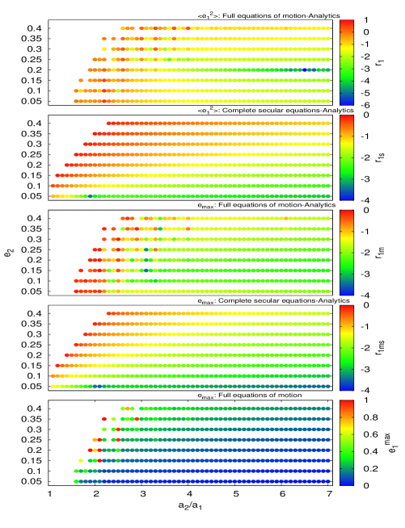
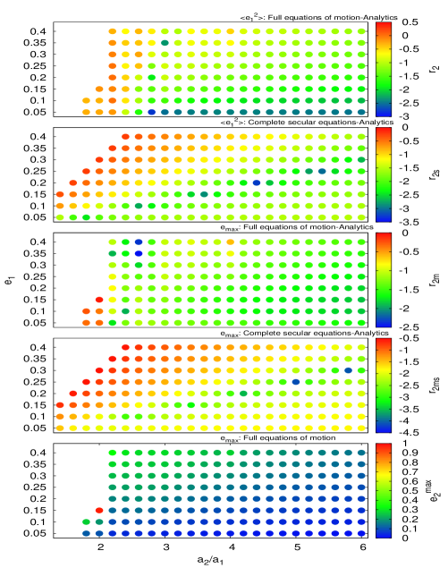
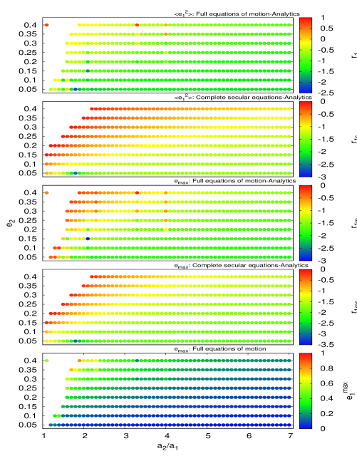
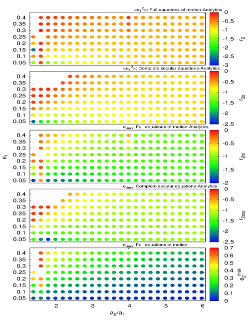
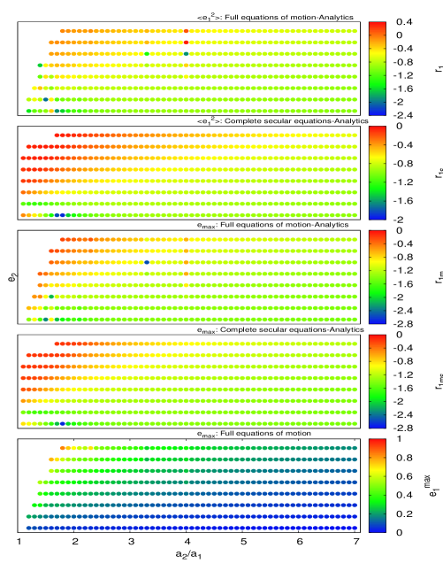
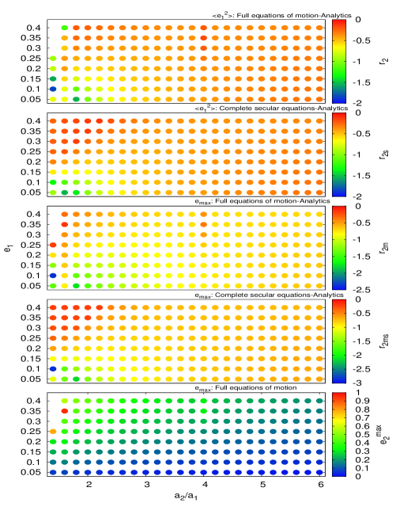